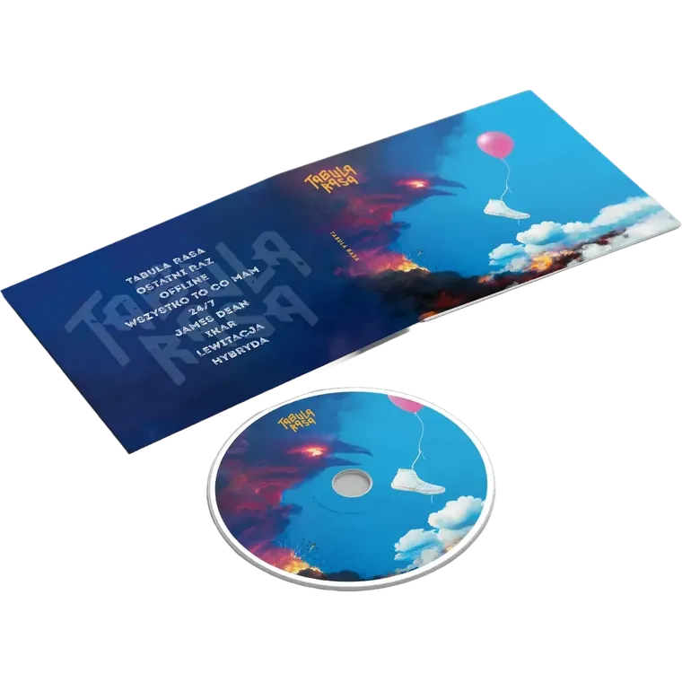
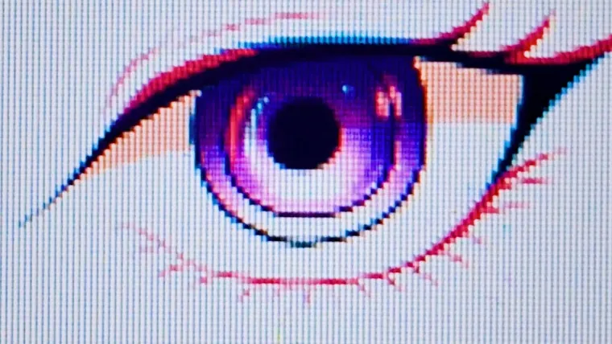
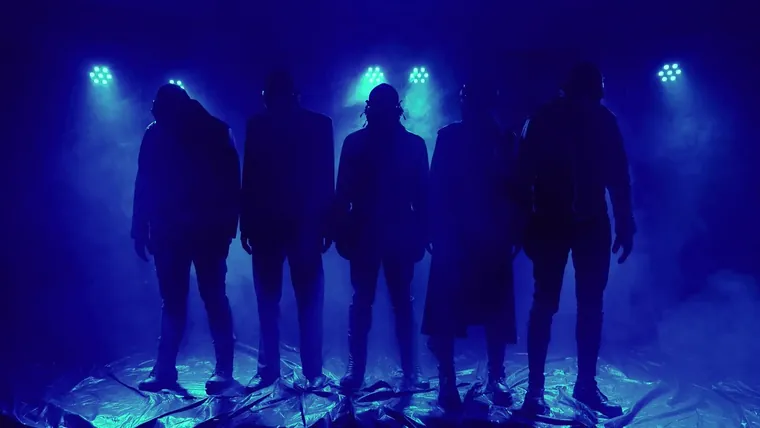
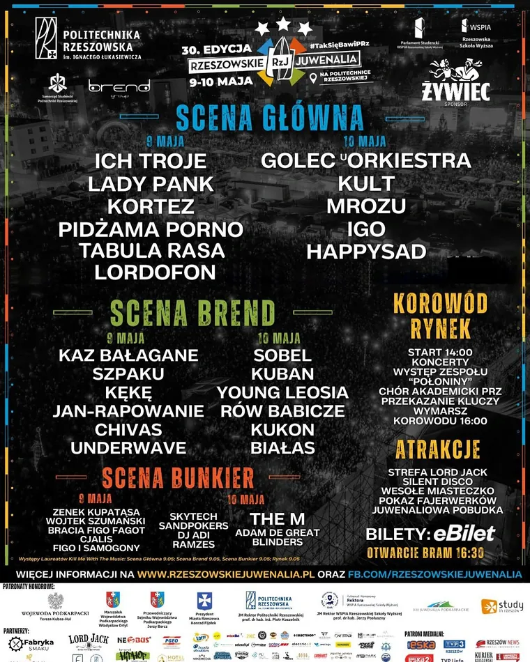
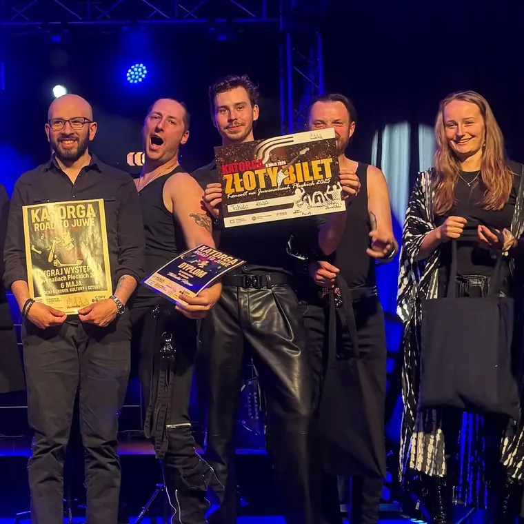
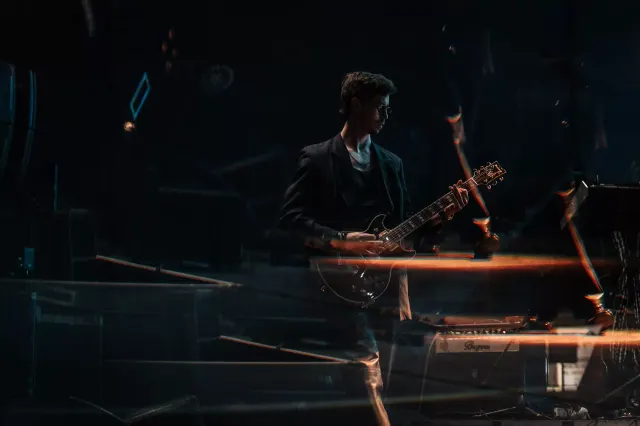

Tabula Rasa
Tabula Rasa
Lewitacja is out.
Single, shows, photos, and band materials.
Music
Latest single: Lewitacja
The single and video in one frame. Let the music take it from here.
Shows
Upcoming dates
The next places to catch Tabula Rasa live.
Międzyrzec Podlaski
Hydrozagadka | Warszawa
News
Latest notes
The recent things worth keeping on your radar.

Grand Prix
We won Wszyscy Spiewamy na Rockowo 2026

Stage
We played Progresja as support before Smith/Kotzen
Tour
Przebudzenie: new cities, new material, and tickets

Studio
New material is getting closer to release

Track
Offline stays in the setlist and keeps moving

Live
Hybrydy was one of those nights that stays
Stage
PKS showed how the new live set works

Crowd
Rzeszow added its voice to the run

City
Plock closed a sharp live chapter

